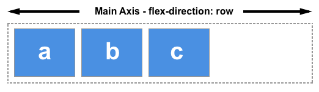
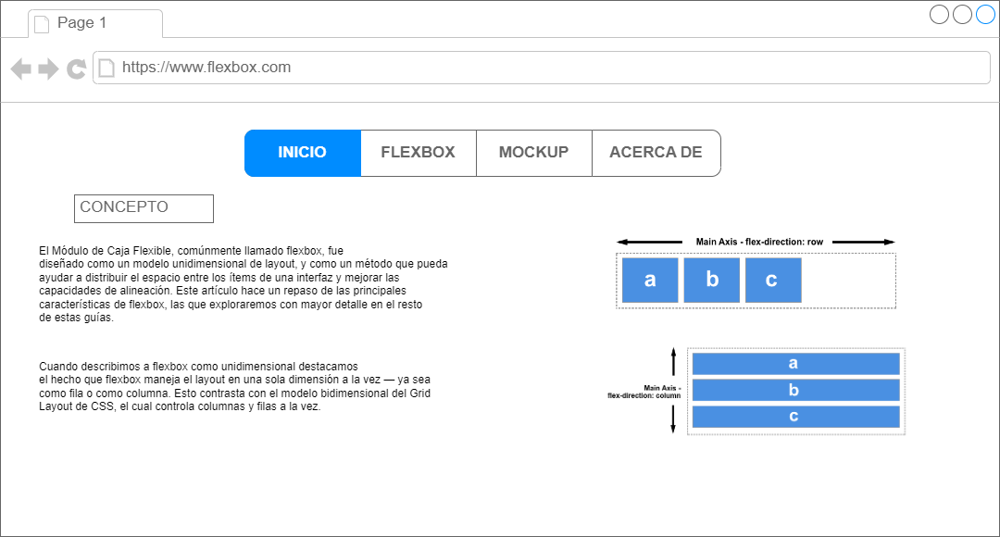

El Módulo de Caja Flexible, comúnmente llamado flexbox,
fue diseñado como un modelo unidimensional de layout, y
como un método que pueda ayudar a distribuir el espacio
entre los ítems de una interfaz y mejorar las capacidades
de alineación. Este artículo hace un repaso de las principales
características de flexbox, las que exploraremos con mayor
detalle en el resto de estas guías.
Cuando describimos a flexbox como unidimensional destacamos
el hecho que flexbox maneja el layout en una sola dimensión
a la vez — ya sea como fila o como columna. Esto contrasta
con el modelo bidimensional del Grid Layout de CSS, el cual
controla columnas y filas a la vez.
Los dos ejes de flexbox
El eje principal
El eje principal está definido por flex-direction,
que posee cuatro posibles valores:
row
row-reverse
column
column-reverse
Si elegimos row o row-reverse, el eje principal correrá a
lo largo de la fila según la dirección de la línea .
Si elegimos row o row-reverse, el eje principal correrá a lo
largo de la fila según la dirección de la línea .
Al elegir column o column-reverse el eje principal correrá desde
el borde superior de la página hasta el final — según la dirección
del bloque.

El eje cruzado
El eje cruzado va perpendicular al eje principal, y por lo
tanto si flex-direction (del eje principal) es row o
row-reverse el eje cruzado irá por las columnas.
Si el eje principal es column o column-reverse entonces
el eje cruzado corre a lo largo de las filas.
Entender cuál eje es cuál es importante cuando empezamos
a mirar la alineación y justificación flexible de los
ítems; flexbox posee propiedades que permiten alinear
y justificar el contenido sobre un eje o el otro.
Mockup de la pagina

Acerca de
Proyecto de sitio Web año 2023-1393
Nombre: Javier Hernando Gomez Castillo
Programa: Ingenieira de sistemas
Fecha de creacion : 18/06/2023
Mis datos de contacto son :
telefono:3004972162
email: jgomezcastillo@gmail.com